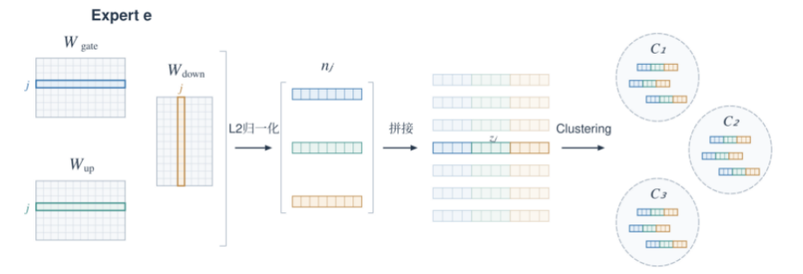

本期记录游嘉玮分享的研究方案与组内初步实验。实验条件未在原记录中完整列出，近似误差与适用性仍待验证。
研究背景与核心思路
本周组会由游嘉玮分享面向 MoE 卸载推理的新 idea：在每个 Expert 内对神经元进行聚类，以聚心近似计算为基础，再根据当前输入动态加载少量簇的原始权重。方案希望在尽量保持模型精度的同时，减少专家权重的传输与计算开销，同时也为海信项目提出一个解决方案。
这一思路关注显存受限场景下的权重搬运问题。MoE 每个 token 只激活部分专家，但按整个专家加载权重仍可能带来较大的 I/O 开销。因此，方案进一步细化到专家内部，以神经元簇作为选择和加载单位。
神经元聚类与动态权重加载
- 神经元表示：同一神经元对应 gate、up 矩阵的同一行，以及 down 矩阵的对应列。将三个权重向量分别进行 L2 归一化，再拼接成完整特征，用于衡量神经元之间的相似性。
- 离线聚类：仅在同一个 Expert 内对神经元分组，构建簇及其聚心。汇报中比较了每个 Expert 划分为 32 簇和 64 簇的配置，为推理阶段的近似计算与按簇加载提供基础。
- 在线选择：利用聚心与当前输入进行近似计算，并按重要性选择需要恢复真实权重的簇。
- 混合计算：加载选中簇内神经元的原始权重并执行计算，其余簇保留聚心近似，再合成 Expert 输出。簇划分预先确定，需要加载的簇随输入变化，从而在精度与权重传输量之间进行权衡。


初步实验结果
组内初步实验。原记录未注明模型规模、硬件、样本量及各配置细节；下列数字按会议记录保留，不作为普遍性能保证。“精度下降”的统计口径未进一步说明。
在延迟方面，部分拉取专家权重在减少 80% 的 IO 时间的同时降低了 70% 的计算开销。在精度方面，新方法相比 full 方法，在 Ruler 数据集、LongBench V2 数据集、GSM8K 数据集和 MMLU-Pro 数据集分别下降 0.5%、1.19%、0%、0%，相比于当前方法超过 5% 的精度下降，该方法在精度方面更具优势。
建设性意见和后续改进方向
- 聚类方法的有效性（刘千里）：建议验证 Expert 内神经元之间是否确实具有足够的相似性，并与直接选取部分重要神经元进行计算的方案对比，判断不使用聚心近似是否也能取得相近效果，从而明确神经元聚类与聚心近似计算的必要性。
- 与 LoRA 低秩分解方法的区别（刘千里）：建议进一步说明本方法与 LoRA 所采用的低秩参数化思路在参数表示、计算过程及优化目标上的区别，明确神经元聚类与聚心近似计算的特点，及本方法的优势和适用场景。
- 近似计算结果的等价性（胡揚嘉）：公式推导表明，聚心近似计算与原始计算并不严格等价，存在一定误差。建议在更多数据集和任务上开展实验，分析近似误差对模型表现的影响，验证本方法在不同场景下的稳定性。
本次交流进一步梳理了可探索的优化方向与待验证的问题，为完善游嘉玮的新 idea 提供了具体参考。
本期整理依据
《系统组小组会会议总结》（2026-10-22，图片版 PDF，第 1 页）。正文保留原记录论点与数字，引用图版权归原作者；概念示意均为待验证研究方向。
查看来源与使用说明 →